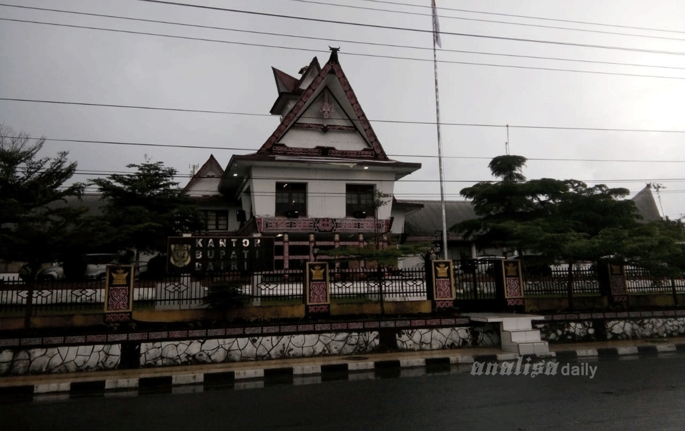

Sidikalang is the name of a sub-district in Dairi district, North Sumatra. Sidikalang which is also the capital city of Dairi Regency is geographically located in the northwest of North Sumatra Province with an area of about 191,625 Ha or about 2.67% of the total area of North Sumatra Province (71,680,000 Ha). Dairi Regency administratively consists of 15 districts, with 145 villages. If viewed from the topographical aspect, Sidikalang District which is at an altitude of 1,066 m above sea level consists of mountains and hills with varying slopes. The condition of the environment is still quite natural and the air is cool and the population is still in balance with its area, making Sidikalang a relatively comfortable area to live in. For residents in Dairi Regency, Sidikalang is a city center for trade, education, health and other public services.